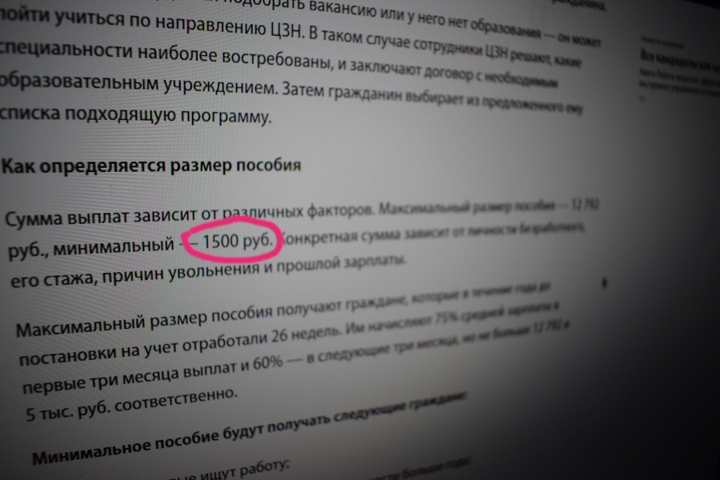
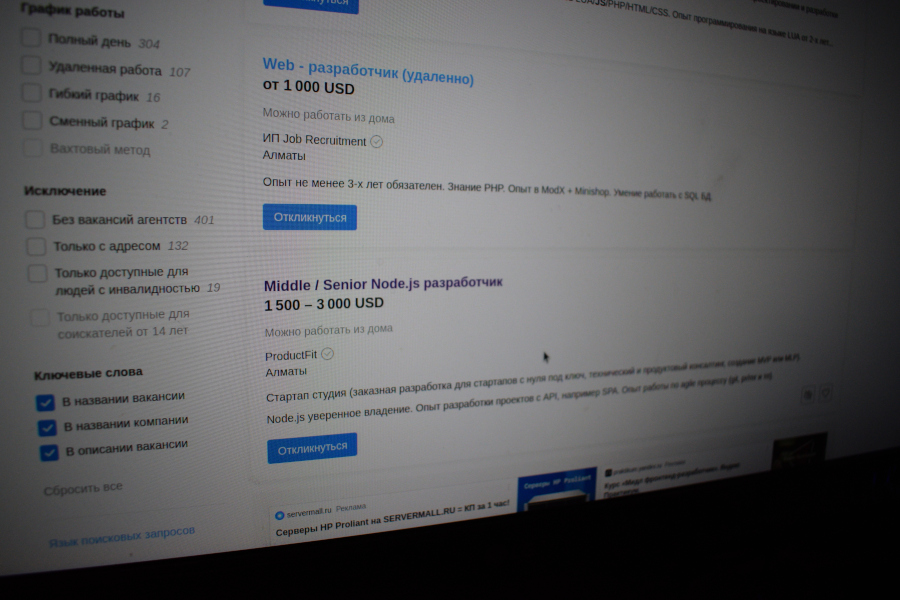

Completed Moscow “a bunch of scum (final)”
Конченная москва “сборище мразей(финал)”
Installed a new beggarly aisle. After which IT people are ready to work hard from morning to night, even for a couple of acres. After all, for the finished Moscow (a bunch of scum). This is not money, but money for a Russian person. And again, with a schizophrenic slogan, the senile zombie box announces from a mouthpiece: “there is no money, but you hold on.” Muscovites even eat rats. Which, according to all the laws of logic and common sense, can be called cannibalism. While the bunker tyrants have closed in the bunker and are playing cards for their own preoccupied interest! Right on the very spot where once, in the distant bloody forties, Hitler's mustache furrowed the inter-antennae expanses of Stalin. These two (finished) characters went down in history as the most formed scum of all time! But the story isn't over yet...
Установили новый нищенский придел. После которого айтишники готовы батрачить с утра до ночи даже за пару соток. Ведь для конченной москвы(сборище мразей). Это не деньги, а для Русского человека деньги. И снова шизофренической речевкой маразматический зомбо ящик оповещает из рупора: “денег нет но вы держитесь”. Крысы москвичи едят даже крыс. Что по всем законам логики и здравого смысла - можно назвать каннибализмом. Пока бункерные тираны, закрылись в бункере и играют в карты, на свой озабоченный интерес! Прямо на том самом месте где однажды в далекие кровавые сороковые, усик гитлера, бороздил межусиковые просторы сталина. Эти два(конченных) персонажа вошли в историю как самые сформированные мрази всех времен! Но история еще не кончилась…
Bunker of Moscow continues to broadcast high-level, professional nonsense.
Бункер москвы продолжает вещать высокоуровневый, профессиональны бред.
and any IT specialist is ready to work hard for a couple of communist acres, because this is much higher than nothing at all. For two hundred a day is four times higher than being left without a job. These are the finished laws they write in the Kremlin bunker. Finally formed scum and Nazi geeks + war criminals of the Third Reich.
и любой айтишник готов вкалывать за пару коммунистических соток, потому что это куда выше чем вообще ничего. Ибо две сотки в день - это в четыре раза выше чем остаться без работы. Вот такие конченные законы пишут в кремлевском бункере. Окончательно сформированные мрази и нацистские выродки, +военные преступники третьего рейха.
One and a half thousand communist rubles. It is starvation in the middle land. And next to it are job advertisements in Kazakhstan with a minimum wage of 1500 USD. This is so much crazy money that for one such salary you can buy a whole house in some post-Soviet Mukhasransk. After all, in real life. This is the annual salary of a math teacher teaching this degrading Moscow trash.
Полторы тыщи коммунистических рублей. Это голодная смерть в промеж шей земле. И рядышком объявления о работе в Казахстане с минималкой в 1500 USD. Это столько бешеные деньги что за одну такую зарплату можно купить целый дом в какомнибудь постсоветском мухасранске. Ведь в реальном жизни. Это годовая зарплата учительницы математики, обучающая это деградирующую московскую шваль.
In the finished Moscow - a bunch of ushlepkov all over the planet. As a character no less offended by life said: “there is no money, but you hold on.”
В конченной москве - сборище ушлепков всей планеты. Как сказал не менее обиженный на жизнь персонаж: “денег нет, но вы держитесь”.
What is one and a half thousand rubles? It's twenty bucks. Living on twenty bucks in Russia is simply impossible. There is no such life for twenty bucks. But this does not prevent the Kremlin and the Moscow bunker from writing new laws that are incompatible with common sense. Send innocent people to concentration camps, crematoria and medical sites. Where, after trepanation of the skull, one shell remains from a person.
Что такое полторы тыщи рублей? Это двадцать баксов. Жить на двадцать баксов в России просто невозможно. Нет такой жизни на двадцать баксов. Но это не мешает кремлю и московскому бункеру писать новые законы, несовместимые со здравым смыслом. Отправлять невинных людей в концлагеря, крематории и медицинские полигоны. Где после трепанации черепа от человека остается одна оболочка.
Russia "great"?
Россия “великая”?
What was the opinion: Great country Russia! Power united, fraternal and unshakable! But in real life, at the present time: Poverty, robbery, riots, communist black poor landlord, living wage! And as the zomboyaschik says: “for Moscow, this is not money, but for a Russian, money.” + here you can add that for six months of the “special military operation” Ukraine defeated the “great” army “second in the world”. Down and out! After that, the wild dad with fists and obscenities is trying to knock out his promised money for a “white Zhiguli”! But in this story there is one worked out version of events: “there is no money, but you hold on”...
Какое было мнение: Великая страна Россия! Держава сплоченная, братская и непоколебимая! Но в реальной жизни, в настоящее время: Нищета, разбои, беспорядки, коммунистический чернокожий бедеэсемщик, прожиточный минимум! И как говорит зомбоящик: “для москвы это не деньги, а для русского деньги”. +сюда можно добавить что за полгода “специальной военной операции” Украина разбила “великую” армию “вторую в мире”. В пух и прах! После чего одичавший батька с кулаками и матами пытаются выбить свои обещанные деньги на “белый жигули”! Но в этой истории один проработанный вариант событий: “денег нет, но вы держитесь”...
But what kind of cohesion in a country where the law obliges a person to exist on $20 a month?
Но какая сплоченность в стране где закон обязывает человека существовать на 20 $ в месяц?
Система комментирования SigComments